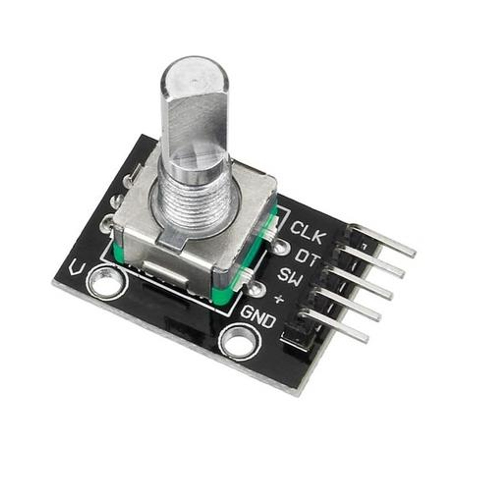
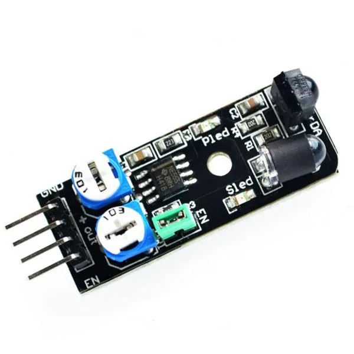
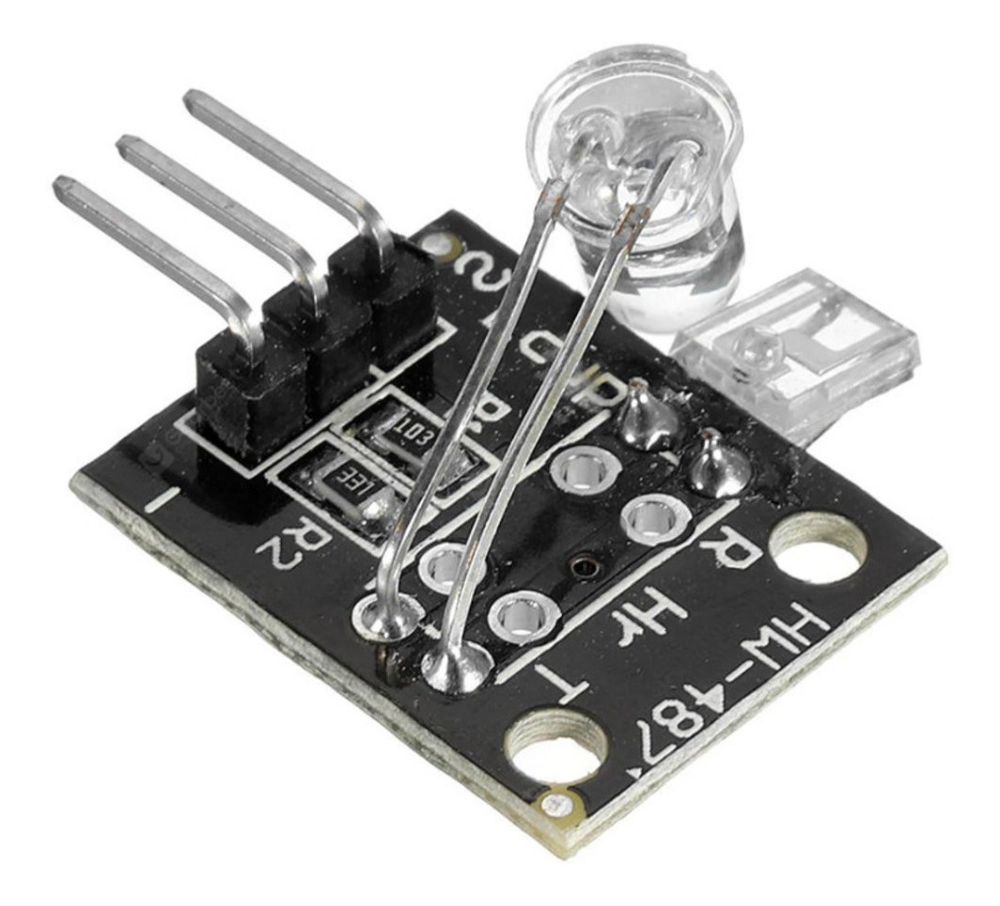
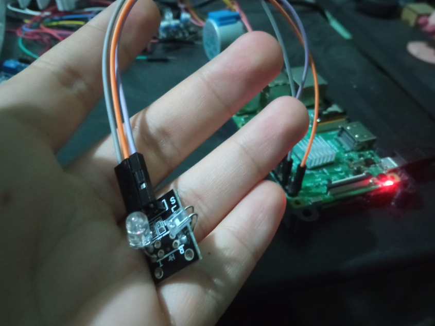
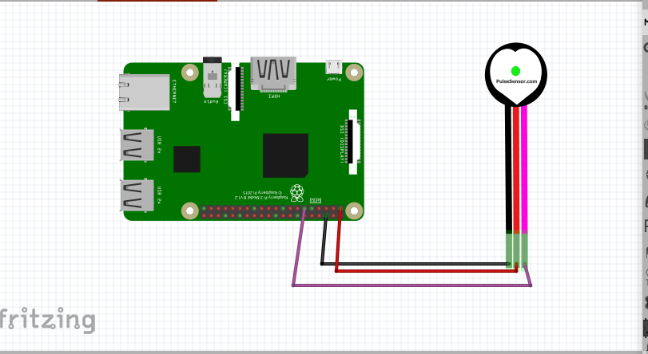

Inicio


Hearbeat sensor
 
La principal funcion de este sensor es identificar la frecuencia cardiaca, para ello este puede contar las pulsasiones detectadas en un determinado tiempo
import RPi.GPIO as GPIO
import time
GPIO.setmode(GPIO.BCM)
GPIO.setup(17, GPIO.IN)
tiempo_inicio = time.time()
pulsos = 0
try:
while True:
valor = GPIO.input(17)
if valor == GPIO.LOW:
pulsos += 1
tiempo_actual = time.time()
tiempo_transcurrido = tiempo_actual - tiempo_inicio
if tiempo_transcurrido > 5:
frecuencia = pulsos / tiempo_transcurrido
frecuencia_cardiaca = frecuencia * 60
print("Frecuencia cardíaca: {:.2f} BPM".format(frecuencia_cardiaca))
tiempo_inicio = time.time()
pulsos = 0
time.sleep(0.1)
except KeyboardInterrupt:
GPIO.cleanup()

Realizado por Christopher Eduardo Barrientos Guerra